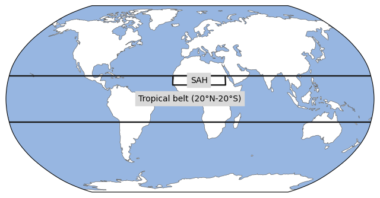
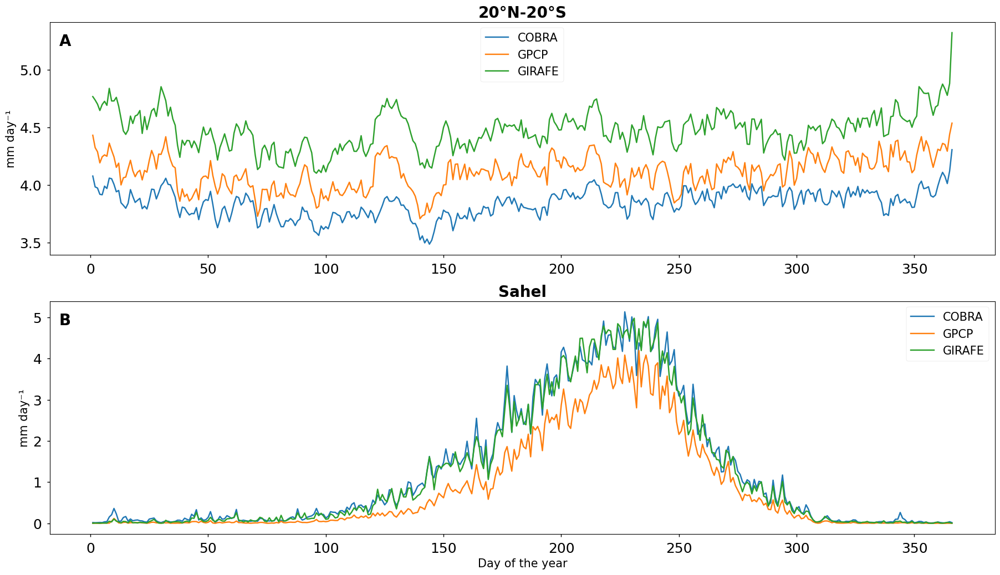
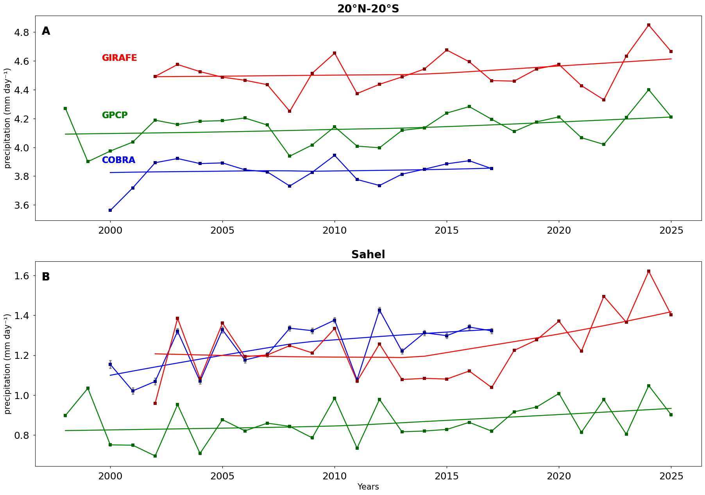

1.1.1. Comparison of precipitation trends in the tropics using satellite based products available in the Climate Data Store#
Production date: 12-10-2026
Producer : CNRS/LMD-IPSL (Sullivan Carbone, Giulio Mandorli); UVSQ/LSCE-IPSL (Hélène Brogniez)
🌍 Use case: Observing the regional evolution of rainfall#
❓ Quality assessment question:#
How consistent are the trends and the associated uncertainties in precipitation over the Sahel and over the tropical belt, as obtained with the precipitation products available in the CDS?
Precipitation is a fundamental component of the hydrological cycle. It significantly influences ecosystems, agriculture, water resources, and weather patterns. In recent decades, climate change has been altering precipitation patterns globally, resulting in shifts in intensity, frequency, and distribution. Monitoring and understanding the precipitation changes are crucial for predicting future climate impacts and formulating adaptive strategies. Satellite remote sensing has played a crucial role in this regard, providing comprehensive data on global precipitation. Unlike in situ measurements, which are limited to specific locations, satellite measurements offer extensive coverage across the globe, including remote and oceanic regions [1, 2].
The Global Precipitation Climatology Project (GPCP), the Copernicus Microwave-based Global Precipitation (COBRA) and the Global Interpolated RAinFall Estimation (GIRAFE) are international initiatives aimed at providing accurate, long-term records of global precipitation. The estimate of precipitation intensity is obtained by the combination of microwave imagers on polar-orbiting satellites and infrared imagers on geostationary satellites regarding GPCP and GIRAFE products and only microwave imagers on polar-orbiting satellites for COBRA. The time period covered by these daily estimates varies depending on the product :
GPCP from 1998 to 2025
COBRA from 2000 to 2017
GIRAFE from 2002 to 2025
These datasets are available on the Copernicus Data Store (CDS) at Precipitation monthly and daily gridded data from 1979 to present derived from satellite measurements (GPCP), Precipitation monthly and daily gridded data from 2000 to 2017 derived from satellite microwave observations (COBRA) and Daily and monthly Global Interpolated RAinFall Estimation (GIRAFE) data derived from satellite observations (GIRAFE).
Several versions of GPCP are available on the CDS. For this notebook, the choice is based on the evaluation of the latest version, 3.3, which is available in 0.5°/daily. Comparisons between previously available versions on CDS have been done in [7]. GIRAFE and COBRA are available in 1°/daily. They are the only ones to provide daily precipitation estimates with associated uncertainties.
This Quality Assessment focuses on the climatological evolution of the precipitation over two regions of interest. The first one is the entire tropical belt (20°N-20°S) and the second one is the Sahel region, located between the Sahara Desert to the north and the humid tropical savanna to the south. The Sahel is a critical area for monitoring precipitation trends due to its significant dependence on the Hadley cell circulation. Additionally, this region experiences large interannual and decadal variability in rainfall, which profoundly impacts agriculture, water resources, and living conditions [3, 9]. Monitoring precipitation trends in the Sahel is essential for understanding the effects of climate change [10] and for developing effective water management and agricultural strategies to enhance food security for the local population [11].
📢 Quality assessment statement#
These are the key outcomes of this assessment
Precipitation estimates from GPCP, GIRAFE and COBRA, fall within the range seen in the literature [6] for the mean annual cycle of daily precipitation over the 2002–2013 period in the 20°N–20°S region. However, they exhibit regional biases that vary across the studied area.
Considering the full temporal extent of each dataset, GPCP and COBRA exhibit increasing trends over the Sahel region, whereas GIRAFE shows a decreasing trend followed by an increasing trend. This difference arises because the GIRAFE dataset does not cover the low-precipitation years at the beginning of the analysis period.
Over the 20°N–20°S region, all three products exhibit weak increasing trends.
GPCP and GIRAFE exhibit more similar uncertainties across the studied regions compared to COBRA, which shows greater variability. Overall, the uncertainties of the three datasets are of the same order of magnitude.
📋 Methodology#
The climatological evolution of precipitation is examined for the 3 datasets at the annual scale, computed from the daily values. This climatological analysis is supported by the calculation of uncertainties and trends.
Uncertainty#
Daily precipitation amounts are averaged spatially for all data records, over the regions of interest (the tropical belt and the Sahel), and then annually.
As mentioned above, only GIRAFE and COBRA provide uncertainty estimates at the daily scale. As a result, two different methods are used to estimate the uncertainty of the annual mean.
For GIRAFE and COBRA, we assume that each daily measurement is independent. Although this is a simplification, it allows us to propagate uncertainties even when spatial and temporal correlations are not well known.
We proceed in two steps. First, the uncertainties for each grid box are combined quadratically. Then, the uncertainty of the mean is obtained by scaling with the square root of the number of observations \(N\) over the studied region for a given year:
where \(\sigma_{g,d}\) represents the uncertainty associated with each measurement, \(g\) denotes the grid boxes within the region of interest, and \(d\) the number of days with valid data in the year. \(\sigma_{year}\) is the resulting uncertainty of the annual mean precipitation.
For GPCP, daily uncertainty estimates are not available. Instead, \(\sigma_{year}\) is obtained from the standard deviation \(\sigma_{std}\) of daily precipitation over the studied region for a given year, divided by the square root of \(N\):
Long-term variability#
The long-term variability are analyzed with the lowess (Locally Weighted Scatterplot Smoothing) function. This is a smoothing method that reveals the general trend in a data series without imposing a linear model. It uses local regressions on groups of neighboring data points to create a smoothed curve that reduces fluctuations and noise in the data while preserving the main variations. This method is particularly useful in climatology for analyzing trends in time series and highlighting their nonlinear changes.
Method#
The analysis comprises the following steps:
1. Choose the parameters to use and setup code
Import the relevant packages. Define the parameters of the analysis and set the dataset requests
Download the precipitation amount of COBRA, GIRAFE and GPCP products.
3. Climatology of daily precipitation amount
The precipitation amount is averaged per day of the year over the 2002-2013 period across the entire 20°N-20°S region and the Sahel region.
4. Long term trend and uncertainty
The precipitation amount is averaged annually across both regions over the maximum period of the associated product.
The uncertainties are propagated to the means, assuming full independence among the measurements.
The lowess function is performed on the time series.
The time series and the associated LOWESS-smooth trend are visualized.
📈 Analysis and results#
Choose the parameters to use and setup code#
Import packages#
Define the regions of interest#
Two regions of interest are defined:
The tropical belt : 20°N-20°S
The Sahel : [12°N-20°N / 17°W-35°E]
and are represented on the map below (Figure 1).

Figure 1: World map showing the tropical belt (20°S–20°N) and the Sahel region (12°N-20°N / 17°W-35°E) studied in this notebook.
Set the data request#
Download the dataset#
Three datasets are requested from the CDS :
The GPCP data record : 1998-2025, v3.3
The GIRAFE data record : 2002-2025
The COBRA data record : 2000-2017
collection_id='satellite-precipitation-microwave'
100%|██████████| 216/216 [00:22<00:00, 9.80it/s]
collection_id='satellite-precipitation'
100%|██████████| 336/336 [00:35<00:00, 9.47it/s]
collection_id='satellite-precipitation-microwave-infrared'
100%|██████████| 288/288 [00:26<00:00, 10.73it/s]
Climatology of daily precipitation amount#
The mean annual cycle of daily precipitation is computed for each data record over 2002-2013 period for the tropical belt and Sahel region. It is obtained by averaging precipitation spatially (longitude-latitude) and by day of the year.

Figure 2 : Mean (2002-2013) annual cycle of daily precipitation (mm/day) over 20°N-20°S (A) and over Sahel region (B) for each precipitation product.
Over both regions, each precipitation product appears to exhibit the same pattern with differences of amplitudes that are more or less pronounced between them. These defferences vary depending on the type of surface, as can be seen over the Sahel region. The existence of these differences and their variability have already been documented between GIRAFE-GPCP (3.2) [5] and COBRA-GPCP (1.3) in the confluence page of COBRA : Product Quality Assessment Report (PQAR). These differences are mainly due to different precipitation rate calculation algorithms used for each product, as underlined by [8]. It can be noticed that over Sahel, GPCP remains different from GIRAFE and COBRA which are themselves quite similar. It shows the lower intensity of precipitation whereas over the equatorial belt, it is between the other datasets. This is because rain gauges are used only within the framework of the GPCP which implies a difference over land surfaces with the other products. The climatological annual cycle over 20°N-20°S of all three products are in the range seen in the literature [6] and present the same pattern. Over the Sahel, they also show a pattern similar reported in [8] with a maximum around the month of August which is around the 240th day of the year on figure 2B.
Long term trend and uncertainty#
Figure 3 presents, for each product, the annual mean precipitation with associated uncertainties over the tropical belt and the Sahel region. Some of these uncertainties are too small to be visible on the figure. LOWESS-smoothed precipitation trends are shown for each product’s full record. The annual means are obtained by averaging precipitation spatially (longitude-latitude) and temporally. The associated uncertainties are computed following the methodology described above.

Figure 3: Annual mean precipitation from GIRAFE, COBRA and GPCP over the 20°N–20°S region (A) and the Sahel region (B). Colored squares represent the annual mean of daily precipitation, with gray error bars indicating the associated uncertainty. Colored lines show the LOWESS-smoothed precipitation trends over each product’s respective period.
First of all, it can be noticed on Figure 3 that the annual mean precipitations over both regions are consistent with the various observations regarding the mean annual cycles shown in figure 2A and B. Over the 20°N–20°S region, most of the three products exhibit weak positive trends despite substantial interannual variability. The uncertainties remain of similar magnitude across products. Over the Sahel region, positive trends are also observed for most products, except for GIRAFE for which it can be seen first a negative trend and then this one become positive. This difference can be explain by the fact that low precipitation years are missed by GIRAFE in the beginning of the period. COBRA stands out by showing consistently stronger positive trend than the other datasets. Uncertainties are again comparable among products, although COBRA exhibits markedly higher values.
ℹ️ If you want to know more#
Key resources#
Some key resources and further reading were linked throughout this assessment.
The CDS catalogue entry for the data used is:
Code libraries used:
C3S EQC custom functions,
c3s_eqc_automatic_quality_control, prepared by B-Open
Reference/Useful material#
[1] Adler, R.F.; Sapiano, M.R.P.; Huffman, G.J.; Wang, J.-J.; Gu, G.; Bolvin, D.; Chiu, L.; Schneider, U.; Becker, A.; Nelkin, E., 2018: The Global Precipitation Climatology Project (GPCP) Monthly Analysis (New Version 2.3) and a Review of 2017 Global Precipitation. Atmosphere, 9, 138. https://doi.org/10.3390/atmos9040138
[2] Gu, G., Adler, R.F., 2023: Observed variability and trends in global precipitation during 1979–2020. Clim Dyn 61, 131–150. https://doi.org/10.1007/s00382-022-06567-9
[3] Biasutti M., 2019: Rainfall trends in the African Sahel: Characteristics, processes, and causes. WIREs Clim Change.10:e591. https://doi.org/10.1002/wcc.591
[4] Weatherhead, E. C., Reinsel, G. C., Tiao, G. C., Meng, X.-L., Choi, D., Cheang, W.-K., Keller, T., DeLuisi, J., Wuebbles, D. J., Kerr, J. B., Miller, A. J., Oltmans, S. J., and Frederick, J. E., 1998: Factors af- fecting the detection of trends: Statistical considerations and applications to environmental data, J. Geophys. Res.-Atmos., 103, 17149–17161, https://doi.org/10.1029/98JD00995
[5] Konrad, H., Roca, R., Niedorf, A., Finkensieper, S., Schröder, M., Cloché, S., Panegrossi, G., Sanò, P., Kidd, C., Jucá Oliveira, R. A., Fennig, K., Sikorski, T., Lemoine, M., and Hollmann, R., 2025: GIRAFE v1: a global climate data record for precipitation accompanied by a daily sampling uncertainty, Earth Syst. Sci. Data, 17, 4097–4124, https://doi.org/10.5194/essd-17-4097-2025
[6] Bador, M., Alexander, L. V. Contractor, S., and Roca, R., 2020: Diverse estimates of annual maxima daily precipitation in 22 state-of-the-art quasi-global land observation datasets, Environ. Res. Lett. 15 035005, https://doi.org/10.1088/1748-9326/ab6a22
[7] Huffman, G. J., R. F. Adler, A. Behrangi, D. T. Bolvin, E. J. Nelkin, G. Gu, and M. R. Ehsani, 2023: The New Version 3.2 Global Precipitation Climatology Project (GPCP) Monthly and Daily Precipitation Products. J. Climate, 36, 7635–7655, https://doi.org/10.1175/JCLI-D-23-0123.1
[8] Sanogo, S., P. Peyrillé, R. Roehrig, F. Guichard, and O. Ouedraogo, 2022: Extreme Precipitating Events in Satellite and Rain Gauge Products over the Sahel. J. Climate, 35, 1915–1938, https://doi.org/10.1175/JCLI-D-21-0390.1
[9] Nicholson, SE., Fink, AH., Funk, C., 2018: Assessing recovery and change in West Africa’s rainfall regime from a 161-year record. Int J Climatol. 38:3770–3786. https://doi.org/10.1002/joc.5530
[10] Monerie, PA., Pohl, B. & Gaetani, M. 2021: The fast response of Sahel precipitation to climate change allows effective mitigation action. npj Clim Atmos Sci 4, 24. https://doi.org/10.1038/s41612-021-00179-6
[11] Yang, K., Wang, G., Cai, W. et al., 2026: Increased interannual variability of Sahel rainfall under greenhouse warming. Nat Commun 17, 1125. https://doi.org/10.1038/s41467-025-67885-0